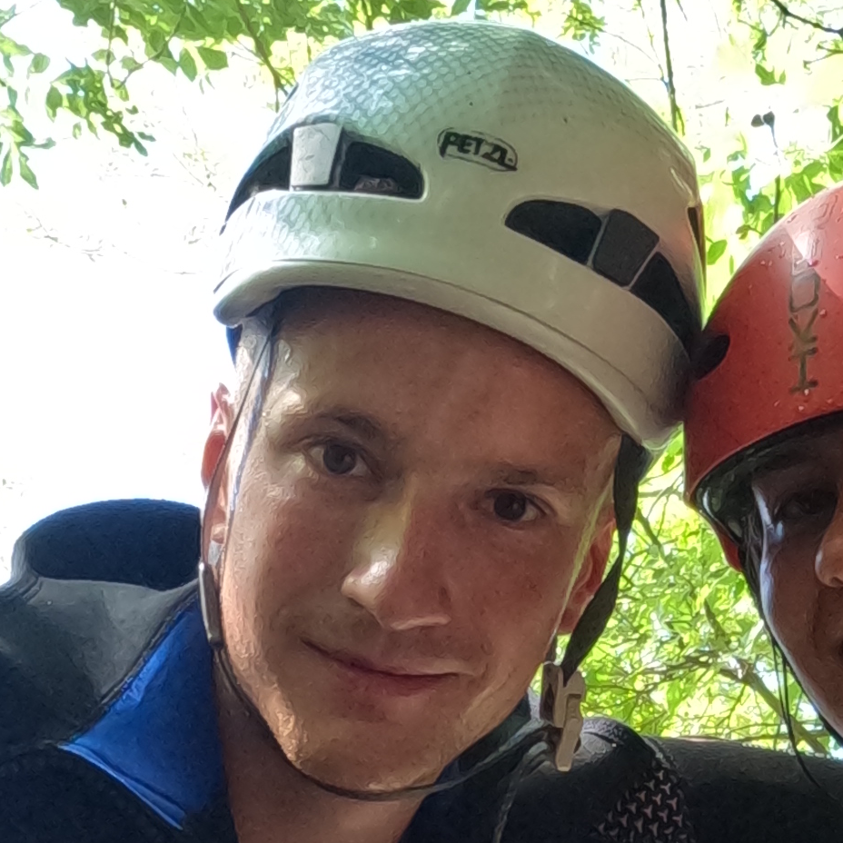

Kanjoning
Ako imate iskusnog vodiča pored sebe, to može učiniti svu razliku u osiguravanju da vaša avantura kanjoninga bude i sigurna i ugodna. Oni mogu da vam obezbede neophodnu opremu, da vas nauče pravilnim tehnikama spuštanja i plivanja i da vas vode kroz krivine kanjona. Štaviše, vodiči kanjoninga takođe mogu da podijele svoje znanje o lokalnoj flori i fauni, geologiji i istoriji ovog područja, obogaćujući vaše iskustvo i produbljujući vašu vezu sa svijetom prirode.
Dakle, ako planirate avanturu kanjoninga, obavezno izaberite renomiranu kompaniju sa iskusnim vodičima. Ne rizikujte sa svojom bezbjednošću i uvek dajte prioritet važnosti da imate obučene profesionalce pored sebe. Uz njihovu pomoć, moći ćete da doživite nezaboravno iskustvo kanjoninga koje je uzbudljivo i bezbedno.
Nevidio
4h
3+
90€ (100€ sa ručkom)
Dobrodošli u kanjon Nevidio, skriveni dragulj Crne Gore koji čeka da bude istražen! Ušuškan u
srcu Nacionalnog parka Durmitor, ovaj krševiti kanjon je destinacija koju morate posjetiti, kako
ljubitelji avanture, tako i za ljubitelji prirode.
Kanjon Nevidio je jedan od poslednjih neistraženih kanjona u Evropi, nedodirnut od strane ljudi.
To je čudo prirode koje oduzima dah i koje se sastoji od strmih litica, kaskadnih vodopada,
kristalno čistih bazena i uskih klisura koje samo čekaju da budu pređene.
Jedan od najboljih načina da doživite Nevidio je odlazak na kanjoning turu. Ova uzbudljiva aktivnost uključuje planinarenje, plivanje, spuštanje i penjanje kroz kanjon, pod vodstvom iskusnih profesionalaca koji će vam u svakom trenutku osigurati sigurnost. Na vašoj kanjoning turi, moći ćete da istražite skrivene čari kanjona Nevidio, otkrivajući njegova mnoga prirodna čuda na putu. Moći ćete da plivate u smaragdnim bazenima, klizite niz prirodne vodene tobogane, skačete sa litica u duboke vodene bazene i spuštate se niz strmine - sve dok ste okruženi zadivljujućom ljepotom kanjona.
Za odlazak na kanjoning turu u kanjonu Nevidio nije potrebno prethodno iskustvo, ali treba da ste u dobroj fizičkoj formi i da vam je udobno u vodi. Obilasci su pogodni za sve uzraste od 8 i više godina, a obezbeđena je sva neophodna oprema. Ako tražite nezaboravnu avanturu u Crnoj Gori, obavezno uvrsite kanjoning turu kanjonom Nevidio u svoj plan. To je iskustvo koje nećete zaboraviti!
Jedan od najboljih načina da doživite Nevidio je odlazak na kanjoning turu. Ova uzbudljiva aktivnost uključuje planinarenje, plivanje, spuštanje i penjanje kroz kanjon, pod vodstvom iskusnih profesionalaca koji će vam u svakom trenutku osigurati sigurnost. Na vašoj kanjoning turi, moći ćete da istražite skrivene čari kanjona Nevidio, otkrivajući njegova mnoga prirodna čuda na putu. Moći ćete da plivate u smaragdnim bazenima, klizite niz prirodne vodene tobogane, skačete sa litica u duboke vodene bazene i spuštate se niz strmine - sve dok ste okruženi zadivljujućom ljepotom kanjona.
Za odlazak na kanjoning turu u kanjonu Nevidio nije potrebno prethodno iskustvo, ali treba da ste u dobroj fizičkoj formi i da vam je udobno u vodi. Obilasci su pogodni za sve uzraste od 8 i više godina, a obezbeđena je sva neophodna oprema. Ako tražite nezaboravnu avanturu u Crnoj Gori, obavezno uvrsite kanjoning turu kanjonom Nevidio u svoj plan. To je iskustvo koje nećete zaboraviti!


Drenoštica
2h
3+
80€ (90€ sa ručkom)
Krapina se nalazi na samo nekoliko minuta vožnje od Budve. Selo je okruženo valovitim
brežuljcima, maslinama i vinogradima, i savršeno je mjesto za opuštanje i bjekstvo od gužve.
Jedna od atrakcija Krapine koju morate posjetiti je kanjon Drenoštice, popularna destinacija
za ljubitelje kanjoninga, koja nudi uzbudljivu priliku za istraživanje krševitog terena Crne
Gore.
Vaša kanjoning tura će vas odvesti kroz lavirint uskih prolaza, strmih litica i stjenovitih terena, i sve dok ste okruženi prirodnim pejzažima koji oduzimaju dah. Dok budete prolazili kroz kanjon Drenoštice, imaćete priliku da se spuštate niz vodopade, plivate u osvježavajućim bazenima i skačete u duboku vodu. Ova uzbudljiva avantura je nezaobilazna za sve koji traže adrenalin i kao takva predstavlja nezaboravno iskustvo u Crnoj Gori.
Nakon avanture kanjoninga, možete se opustiti i opustiti u šarmantnom selu Krapina, gdje ćete pronaći tradicionalno crnogorsko gostoprimstvo i ukusnu domaću kuhinju. Obavezno probajte neke od domaćih specijaliteta, kao što su svježe ulovljena riba, meso sa roštilja i domaća rakija.
Bilo da ste u potrazi za uzbuđenjima ili ljubitelji prirode, kanjon Drenoštice i selo Krapina imaju za svakog ponešto. Dođite i istražite ovaj skriveni dragulj u Crnoj Gori i stvorite uspomene koje će trajati doživotno!
Vaša kanjoning tura će vas odvesti kroz lavirint uskih prolaza, strmih litica i stjenovitih terena, i sve dok ste okruženi prirodnim pejzažima koji oduzimaju dah. Dok budete prolazili kroz kanjon Drenoštice, imaćete priliku da se spuštate niz vodopade, plivate u osvježavajućim bazenima i skačete u duboku vodu. Ova uzbudljiva avantura je nezaobilazna za sve koji traže adrenalin i kao takva predstavlja nezaboravno iskustvo u Crnoj Gori.
Nakon avanture kanjoninga, možete se opustiti i opustiti u šarmantnom selu Krapina, gdje ćete pronaći tradicionalno crnogorsko gostoprimstvo i ukusnu domaću kuhinju. Obavezno probajte neke od domaćih specijaliteta, kao što su svježe ulovljena riba, meso sa roštilja i domaća rakija.
Bilo da ste u potrazi za uzbuđenjima ili ljubitelji prirode, kanjon Drenoštice i selo Krapina imaju za svakog ponešto. Dođite i istražite ovaj skriveni dragulj u Crnoj Gori i stvorite uspomene koje će trajati doživotno!


Međuriječ
4h
4+
100€
U krševitim planinama Crne Gore nalazi se jedna od najbolje čuvanih tajni zemlje -
kanjon Međuriječ. Ovaj skriveni dragulj je destinacija koju morate posjetiti, za svakoga
ko traži avanturističko iskustvo van putanje.
Kanjoning u kanjonu Međurijeca pravi je adrenalin. Sa svojim strmim liticama, brzim vodopadima i uskim klisurama, ovaj kanjon je igralište za one koji traže uzbuđenje. Dok se krećete kroz kanjon, spuštaćete se niz kaskadne vodopade, skakaćete u duboke bazene i kretati se kroz krivine kanjona. Ali kanjoning u kanjonu Međurijec nije samo uzbuđenje – to je i prilika da se povežete sa prirodom na dubok način. Okruženi netaknutom divljinom bićete uronjeni u prirodne ljepote Crne Gore na svakom koraku. Od kristalno čistih voda kanjona do bujnih šuma koje ga okružuju, kanjon Međuriječ je mjesto od kojeg zastaje dah.
A uz stručne vodiče koji će vas voditi, moći ćete da istražujete kanjon bezbjedno i pouzdano. Bilo da ste iskusan profesionalac u kanjoningu ili avanturista prvi put, vodiči će vam pružiti znanje i opremu koja vam je potrebna za nezaboravno iskustvo. Ali nemojte nas samo vjerovati na riječ – dođite i uvjerite se zašto je kanjon Međuriječ jedno od skrivenih blaga Crne Gore. Rezervišite svoju avanturu već danas i doživite uzbuđenje istraživanja jednog od najneverovatnijih prirodnih čuda u zemlji.
Kanjoning u kanjonu Međurijeca pravi je adrenalin. Sa svojim strmim liticama, brzim vodopadima i uskim klisurama, ovaj kanjon je igralište za one koji traže uzbuđenje. Dok se krećete kroz kanjon, spuštaćete se niz kaskadne vodopade, skakaćete u duboke bazene i kretati se kroz krivine kanjona. Ali kanjoning u kanjonu Međurijec nije samo uzbuđenje – to je i prilika da se povežete sa prirodom na dubok način. Okruženi netaknutom divljinom bićete uronjeni u prirodne ljepote Crne Gore na svakom koraku. Od kristalno čistih voda kanjona do bujnih šuma koje ga okružuju, kanjon Međuriječ je mjesto od kojeg zastaje dah.
A uz stručne vodiče koji će vas voditi, moći ćete da istražujete kanjon bezbjedno i pouzdano. Bilo da ste iskusan profesionalac u kanjoningu ili avanturista prvi put, vodiči će vam pružiti znanje i opremu koja vam je potrebna za nezaboravno iskustvo. Ali nemojte nas samo vjerovati na riječ – dođite i uvjerite se zašto je kanjon Međuriječ jedno od skrivenih blaga Crne Gore. Rezervišite svoju avanturu već danas i doživite uzbuđenje istraživanja jednog od najneverovatnijih prirodnih čuda u zemlji.


Škurda
4h
4+
80€
Otkrijte prirodna čuda Crne Gore istražujući kanjon Škurde koji oduzima dah u
Kotoru. Smješteno u starom gradu, ovo zapanjujuće čudo prirode je destinacija koju
morate posjetiti.
Sa svojim kristalno čistim vodama, dramatičnim liticama i bujnom vegetacijom, kanjon
Skurda je pravo čudo majke prirode.
Ova klisura koja oduzima dah nudi uzbudljivo iskustvo kanjoninga koje će testirati vaše granice i ostaviti vam uspomene koje će trajati cio život. Ova izazovna aktivnost uključuje navigaciju kroz neravni teren kanjona, uključujući spuštanje niz vodopade, skakanje u duboke bazene i penjanje preko kamenih gromada. Ali za one koji su spremni za izazov, nagrade su vredne toga. Dok budete prolazili kroz kanjon, bićete počašćeni nekim od najlepših pogleda u celoj Crnoj Gori. Visoke litice, kristalno čisti bazeni i bujna vegetacija okružuju vas na svakom koraku, stvarajući onostranu atmosferu koja je istovremeno uzbudljiva i izaziva strahopoštovanje.
Ali kanjoning u kanjonu Škurda nije samo pejzaž. To je takođe prilika da testirate svoje vještine i gurnete sebe do novih granica. Sa stručnim vodičima koji će vas voditi, moći ćete da savladate izazove za koje nikada niste mislili da su mogući i doživećete osećaj postignuća koji malo koja druga aktivnost može da pruži. Bilo da ste iskusan profesionalac u kanjoningu ili avanturista prvi put, kanjon Škurda je destinacija koju ne treba propustiti. Pa zašto ne rezervišite svoje putovanje danas i doživite uzbuđenje kanjoninga u jednom od najlepših prirodnih čuda Crne Gore?
Ova klisura koja oduzima dah nudi uzbudljivo iskustvo kanjoninga koje će testirati vaše granice i ostaviti vam uspomene koje će trajati cio život. Ova izazovna aktivnost uključuje navigaciju kroz neravni teren kanjona, uključujući spuštanje niz vodopade, skakanje u duboke bazene i penjanje preko kamenih gromada. Ali za one koji su spremni za izazov, nagrade su vredne toga. Dok budete prolazili kroz kanjon, bićete počašćeni nekim od najlepših pogleda u celoj Crnoj Gori. Visoke litice, kristalno čisti bazeni i bujna vegetacija okružuju vas na svakom koraku, stvarajući onostranu atmosferu koja je istovremeno uzbudljiva i izaziva strahopoštovanje.
Ali kanjoning u kanjonu Škurda nije samo pejzaž. To je takođe prilika da testirate svoje vještine i gurnete sebe do novih granica. Sa stručnim vodičima koji će vas voditi, moći ćete da savladate izazove za koje nikada niste mislili da su mogući i doživećete osećaj postignuća koji malo koja druga aktivnost može da pruži. Bilo da ste iskusan profesionalac u kanjoningu ili avanturista prvi put, kanjon Škurda je destinacija koju ne treba propustiti. Pa zašto ne rezervišite svoje putovanje danas i doživite uzbuđenje kanjoninga u jednom od najlepših prirodnih čuda Crne Gore?
Tim
Kada je u pitanju istraživanje prirodnih ljepota crnogorskih kanjona, želite vodiče
koji su ne samo iskusni i obrazovani, već i strastveni prema prirodi. Zato su naši
vodiči savršeno prikladni za vašu avanturu kanjoninga.
Naši vodiči su svi entuzijasti prirode sa dugom istorijom vođenja kanjona. Oni razumiju jedinstvenu geologiju i ekologiju svakog kanjona i mogu da ukažu na floru i faunu koji svaku lokaciju čine posebnom. Njihova ljubav prema prirodi je zarazna i ponosni su što svoja znanja i iskustva dele sa drugima. Ali stručnost naših vodiča se ne zaustavlja na kanjoningu. Oni su takođe dio NVO GSS (Gorska služba spašavanja), što znači da su obučeni u tehnikama hitnog spasavanja i prve pomoći. Pored toga, penjači su u PSD Javorak iz Nikšića, tako da imaju veliko iskustvo u planinarenju i radu sa užetom.
Ne samo da su naši vodiči obrazovani i vješti, već su i ljubazni i otvoreni. Vole da upoznaju nove ljude i dijele svoju strast prema prirodi. Oni vode računa o tome da se svaki član vaše osjeća prijatno u toku ture. Kada rezervišete avanturu kanjoninga sa nama, možete vjerovati da ste u dobrim rukama sa našim stručnim vodičima. Posvećeni su tome da vaše iskustvo učine nezaboravnim, a njihova ljubav prema prirodi sigurno će se odraziti na vas.
Upoznajte Bogdana - penjača, vodiča kanjoninga i entuzijastu sa preko sedam godina
iskustva u industriji. Bogdan je član PSD Javorak u Nikšiću i radi kao vodič za
kanjoning ture. Takođe je dio spasilačkog tima GSS Crne Gore.
Bogdanova strast prema prirodi i avanturama dovela ga je do istraživanja nekih od
najljepših i najizazovnijih pejzaža na svijetu. Popeo se na vrhove kao što su
Materhorn i Elbrus, a takođe je stekao PADI ronilačke dozvole.
Kao iskusan vodič kanjoninga, Bogdan zna kako da se kreće i po najtežim kanjonima, osiguravajući da njegovi klijenti imaju bezbedno i uzbudljivo iskustvo. Posvećen je pružanju usluge vrhunskog kvaliteta i uvijek ide iznad i dalje kako bi se pobrinuo da se njegovi klijenti dobro provedu.
Ali ono što Bogdana zaista izdvaja je njegova prijateljska i otvorena ličnost. Voli da upoznaje nove ljude i sklapa nove prijatelje, a njegov entuzijazam je zarazan. Bilo da ste iskusni avanturista ili prvi put u kanjoningu, Bogdanovo prijateljsko ponašanje i iskustvo čine ga savršenim vodičem za vašu sledeću avanturu na otvorenom.
Naši vodiči su svi entuzijasti prirode sa dugom istorijom vođenja kanjona. Oni razumiju jedinstvenu geologiju i ekologiju svakog kanjona i mogu da ukažu na floru i faunu koji svaku lokaciju čine posebnom. Njihova ljubav prema prirodi je zarazna i ponosni su što svoja znanja i iskustva dele sa drugima. Ali stručnost naših vodiča se ne zaustavlja na kanjoningu. Oni su takođe dio NVO GSS (Gorska služba spašavanja), što znači da su obučeni u tehnikama hitnog spasavanja i prve pomoći. Pored toga, penjači su u PSD Javorak iz Nikšića, tako da imaju veliko iskustvo u planinarenju i radu sa užetom.
Ne samo da su naši vodiči obrazovani i vješti, već su i ljubazni i otvoreni. Vole da upoznaju nove ljude i dijele svoju strast prema prirodi. Oni vode računa o tome da se svaki član vaše osjeća prijatno u toku ture. Kada rezervišete avanturu kanjoninga sa nama, možete vjerovati da ste u dobrim rukama sa našim stručnim vodičima. Posvećeni su tome da vaše iskustvo učine nezaboravnim, a njihova ljubav prema prirodi sigurno će se odraziti na vas.

Kao iskusan vodič kanjoninga, Bogdan zna kako da se kreće i po najtežim kanjonima, osiguravajući da njegovi klijenti imaju bezbedno i uzbudljivo iskustvo. Posvećen je pružanju usluge vrhunskog kvaliteta i uvijek ide iznad i dalje kako bi se pobrinuo da se njegovi klijenti dobro provedu.
Ali ono što Bogdana zaista izdvaja je njegova prijateljska i otvorena ličnost. Voli da upoznaje nove ljude i sklapa nove prijatelje, a njegov entuzijazam je zarazan. Bilo da ste iskusni avanturista ili prvi put u kanjoningu, Bogdanovo prijateljsko ponašanje i iskustvo čine ga savršenim vodičem za vašu sledeću avanturu na otvorenom.